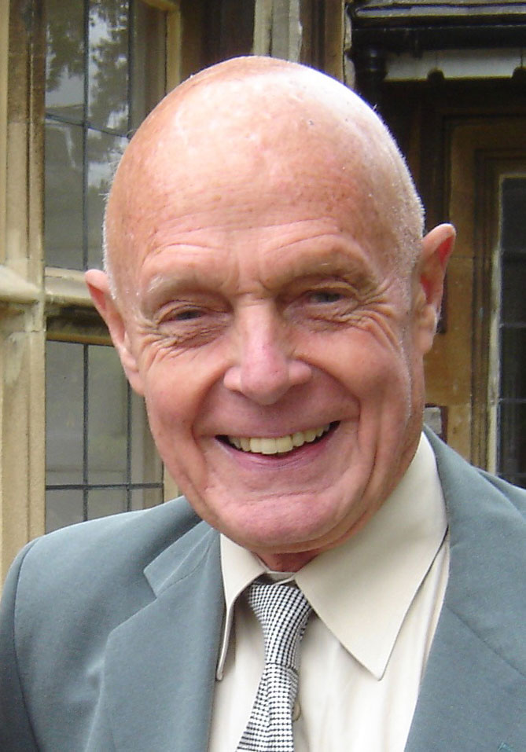

John J Davis, President of the Torbay Recorded Music Society
John Davis, known nationally and internationally as an authority on the
great Finnish
composer Jean Sibelius, died on 27th October in Torbay hospital at the age
of 92.
John was the son of musicians, his mother a piano tutor and his father a
church organist
from whom he inherited a love of these instruments and classical music in
general. John had
been interested in Sibelius since his early teens when his father bought
him his first record,
an 78rpm disc of the composer’s Karelia Suite just as news came through
of the Russian
annexation of the Karelian Islands from Finland during World War II. Sibelius
and his music
was to become his abiding interest and the basis of his international reputation,
especially in
Sibelius’s homeland, Finland.
After national service with the Royal Navy and afterwards working as a driving examiner – he liked to say he had allowed over 32,000 drivers onto the public highway – he devoted his considerable energies to promoting music, supporting musicians, and developing music appreciation amongst a wider public.
John will be remembered by many in Torbay as effectively the founder and inspiration behind the Torbay Gramophone Society, later to become the Torbay Recorded Music Society as CDs became available and recording and sound reproduction technology developed. John joined the Torbay Gramophone Society in 1958 and under his leadership it grew from a rather small group to a vibrant society attracting over 200 members to its weekly presentations. As well as recorded music, he organised concert trips for groups to attend live performances, which later expanded to include overseas venues in Europe, Finland and the USSR. Soon John was being asked to present programmes nationally, typically of his musical enthusiasms which included, as well as Sibelius, the Philadelphia Orchestra and its celebrated conductor Leopold Stokowski.
In 1970 John was also instrumental in the creation of the Torbay Musical Weekend, which attracts guests, performers and presenters of the highest calibre to a residential weekend of music-making and listening annually in Torquay. Initially under the management of the Recorded Music Society, it has developed into an independent event under the control of the Friends of Torquay. Still going strong and celebrating its 50th Anniversary, this year’s Weekend runs from Friday 19th to Sunday 21st November 2021 at the Grand Hotel, Torquay.
Known and a friend to many in the world of music, both performers and administrators, John Davis did much to promote the cause of musical appreciation both in Torbay and further afield. His welcoming presence will be greatly missed at meetings of the Torbay Recorded Music Society.
Michael Collop
Torbay RMS